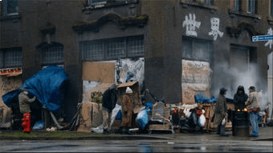

Points of Interest
The Glades
The Glades, a (formerly high-poverty rate)neighborhood in Star City, has fallen under hard times in the past, but thanks to caring citizens like Rene Ramirez, the Glades is turning over a new leaf. It has recently become one of the most rapidly developing areas in the United States. Crime is at an all-time low and the city population has nearly doubled since 2012. People finally feel safe again in the Glades.
Palmer Tech
Dr. Raymond Palmer, a genius and a philanthropist, is the founder and CEO of Palmer Technologies. Palmer Tech has contributed largely to the Star City robotics industry, inspired the city to become a better place to live, and caused the city to thrive in recent years.
Queen Mansion
The former home of the Queen family, head of Queen Industries, the Queen Mansion sadly burned down in 2014. It's still a mystery on how it happened to this day. Some believe it was arson, others believe it was just a tragic accident. What we do know is that the Queen family has had an unfortunate history. Robert Queen died at sea, on their yacht. Robert's son, Oliver, survived and ended up on a deserted island for five years before being rescued. Moira Queen, Oliver's mother, was murdered by Slade Wilson. Despite the listed tragedies, the corpse of the Queen Mansion is one of the most visited sites in all of Star City.
Queen Industries
Queen Industries was the pride and joy of Star City in the past, but now lies in ruins due to the number of terrorist attacks on the city. You will still find Queen Industry logos on many buildings you pass in the city. Be on the lookout!

Star City Bay
Star City bay did not always look as stellar as it does today. It used to be nothing more than a place for people to throw their litter on the ground, but thanks to the Mayor's restoration projects into the bay, it now is in prime condition and a tourist hotspot. You can find a memorial statue for the Black Canary, or Laurel Lance, who was thought to have passed away in 2015, but was found to be alive in 2017. Come to the Star City Bay for an awesome experience for the whole family!